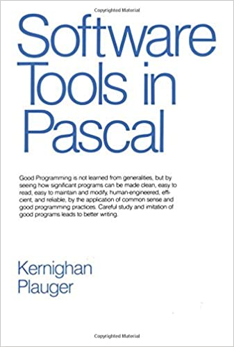
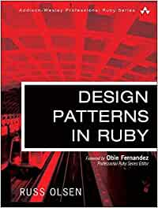

<div class="center"> <h1>Software Design by Example: Lessons Learned</h1> <p><img src="../../files/talks/codebender-logo.svg" alt="Third Bit logo" width="20%" /></p> <p>Greg Wilson</p> <p><img src="../../files/talks/cc-by.svg" width="20%" alt="CC-BY" /></p> </div> --- <div class="center padtop"> <h1>Software Design by Example:<br>Lessons Learned</h1> <p><img src="../../files/talks/codebender-logo.svg" alt="Third Bit logo" width="15%" /></p> <p>Greg Wilson</p> <p><a href="http://third-bit.com/talks/sdx/">http://third-bit.com/talks/sdx/</a></p> <p><img src="../../files/talks/cc-by.svg" width="20%" alt="CC-BY" /></p> </div> --- ## Why Should You Listen to Me? - I've built a lot of complicated software - And I've been lucky enough to hang out with some very smart people <div align="center"> <p> <img src="../../files/talks/beautiful-code.png" alt="Beautiful Code cover" /> <img src="../../files/talks/aosa1.png" alt="AOSA vol 1 cover" /> <img src="../../files/talks/aosa2.png" alt="AOSA vol 2 cover" /> </p> </div> --- <!--# class=aside --> ## A Note on Self-References - *I refer to my own work several times in this talk because I've spent the last twenty years trying to turn dozens of books and hundreds of papers into something that working programmers and computer science professors might actually read.* - *Please see the bibliographies of the cited works for pointers to the original material, and please accept my apologies in advance for over-simplifications.* --- ## Starting Point <p class="center"><strong>Computer scientists aren't taught software design</strong></p> - The most design-intensive "engineering" discipline there is - But students don't read, analyze, and critique programs - We are architects who don't look at existing buildings <div align="center"> </div> --- ## Twelve Rules From [[Wi22a](https://doi.org/10.1371/journal.pcbi.1009809)] <ol> <li>Design after the fact</li> <li>Design for people's cognitive capacity</li> <li>Design in coherent levels</li> <li>Design for evolution</li> <li>Group related information together</li> <li>Use common patterns</li> <li>Design for delivery</li> <li>Design for testability</li> <li>Design as if code was data</li> <li>Design graphically</li> <li>Design with everyone in mind</li> <li>Design for contribution</li> </ol> --- ## "But What Do They <em>Mean</em>?" > Rooks should always be placed behind passed pawns, > except when it is incorrect to do so. > <br> > – Siegbert Tarrasch - "Divide code into coherent pieces" is meaningless until you have seen it done - "Plan for reasonable future changes" is unhelpful if you haven't seen how code evolves over time - Top-down instruction (almost) never works because novices don't know what the generalizations are generalizing *from* --- ## The PETE Pedagogical Pattern From [[Wi19a](#Wi19a)] <ol> <li><em>Problem</em>: describe what we want to accomplish.</li> <li><em>Example</em>: present a solution to that specific problem.</li> <li><em>Theory</em>: explain the underlying principles and give names to the parts.</li> <li><em>Elaboration</em>: present a second problem/solution pair so that learners can see what stays the same and what varies.</li> </ol> <ul> <li>Depends on careful selection of problems and solutions</li> <li>And on understanding what the audience is ready for at each stage</li> </ul> --- ## Learner Personas - **Aïsha** started writing VB macros for Excel in an accounting course and never looked back. After spending three years doing front-end JavaScript work she now wants to learn how to build back-end applications. - **Rupinder** is a computer science undergrad. He has learned a lot of theory, and uses Git and unit testing tools in assignments, but doesn't understand how they work. - **Yim** teaches courses on full-stack web development and software design. They are happy with the former, but frustrated that books about the latter are so abstract and use examples that their students can't relate to. --- ## Learner Personas - This material will fill in some gaps in **Aïsha's** knowledge and teach her some common design patterns. - This material will give **Rupinder** a better understanding of those tools and of how to design new ones. - This material will give **Yim** starting points for a wide variety of course assignments. --- ## Prerequisites - Install Node and run programs with it from the command line. - Write JavaScript programs using loops, lists, objects, functions, and classes. - Create static web pages using HTML and CSS. - Use Git to save and share files. (It's OK not to know the 90% of its commands.) - Know what a tree is and how to process one recursively. (This is the most complicated data structure and algorithm we *don't* explain.) --- ## Inspirations <div class="row"> <div class="col-4">  </div> <div class="col-8"> Teach software design by re-implementing core Unix command-line tools. </div> </div> <div class="row"> <div class="col-4">  </div> <div class="col-8"> Introduce design patterns by showing how they're used in the Ruby standard library. </div> </div> <div class="row"> <div class="col-4"> </div> <div class="col-8"> Build scale models of common applications to expose their core design decisions. </div> </div> --- ## Choosing Examples - [*500 Lines or Less*](https://aosabook.org/en/#500lines) had two weaknesses: - Every author used their favorite language - …most of which students won't have seen - The applications ranged from 3D modeling to OCR to a scheduling system for assembly lines - …most of which will be new to most readers --- ## Choosing Examples - But we can assume programmers know how to use (some) programming tools - …so use those for examples - Narrower range of problems, but still plenty for a book - And if people realize their tools are just software, maybe they'll build more tools of their own --- ## Version 1: <a href="../../sdxjs/">JavaScript</a> <div class="row"> <div class="col-6"> <ol> <li>Systems Programming</li> <li>Async Programming</li> <li>Unit Testing</li> <li>File Backup</li> <li>Data Tables</li> <li>Pattern Matching</li> <li>Parsing Expressions</li> <li>Page Templates</li> <li>Build Manager</li> <li>Layout Engine</li> </ol> </div> <div class="col-6"> <ol start="11"> <li>File Interpolator</li> <li>Module Loader</li> <li>Style Checker</li> <li>Code Generator</li> <li>Doc Generator</li> <li>Module Bundler</li> <li>Package Manager</li> <li>Virtual Machine</li> <li>Debugger</li> </ol> </div> </div> --- ## A Better Way to Think About It <table> <tr><th>Count</th><th>Idea</th></td> <tr><td>18</td><td>functions as data</td></tr> <tr><td>10</td><td>interface vs. implementation</td></tr> <tr><td>8</td><td>namespaces</td></tr> <tr><td>6</td><td>reading order vs. execution order</td></tr> <tr><td>5</td><td>code as trees</td></tr> <tr><td>4</td><td>dynamic discovery</td></tr> <tr><td>3</td><td>recursion as nested loops</td></tr> <tr><td>2</td><td>code as text</td></tr> <tr><td>2</td><td>hashing</td></tr> </table> --- ## Bibliography <p id="Wi22b">[Wi22b] Greg Wilson: <a href="https://www.taylorfrancis.com/books/mono/10.1201/9781003317807/software-design-example-greg-wilson" /><em>Software Design by Example: A Tool-Based Introduction with JavaScript</em></a>. CRC Press/Taylor and Francis, 2022, 978-1032399676. </p> <p id="Wi22a">[Wi22a] Greg Wilson: "<a href="https://doi.org/10.1371/journal.pcbi.1009809">Twelve quick tips for software design</a>". <em>PLOS Computational Biology</em>, 2022. </p> <p id="Wi19a">[Wi19a] Greg Wilson: <a href="https://teachtogether.tech/"><em>Teaching Tech Together</em></a>. Chapman & Hall/CRC Press, 2019. ISBN 978-0367352974. </p>